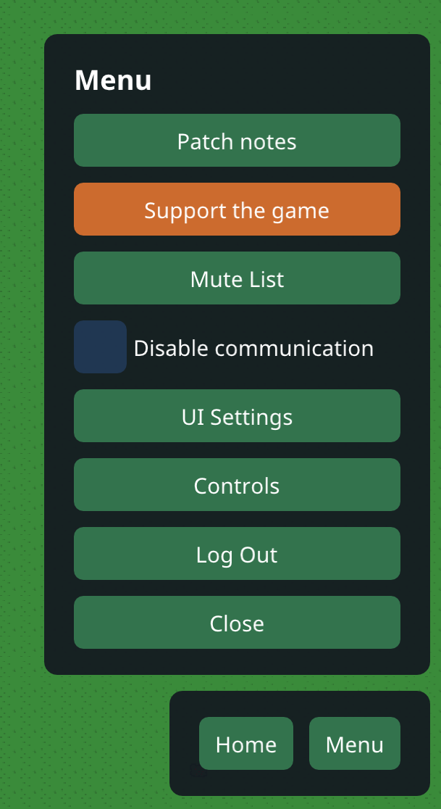
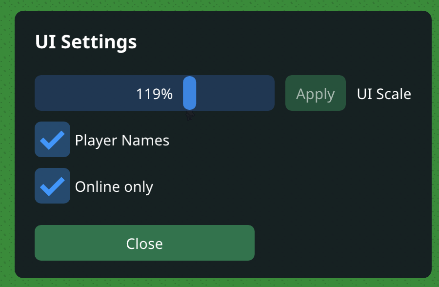

0.6 · 2026-10-30
Live chat has arrived!
Development Version 6
Player chat, Status text, new UI options, player names, call for artists!
The text box
- One box at the top holds the Chat and Status tabs. Drag its bottom edge to make it taller or shorter.
- We changed the UI around to make room for the chat/status box.
Chat
- Your character's hearing range is 20 tiles, and chats are not saved.Each message also shows as a bubble above the speaker.
- Words on the server's word list are blocked, and you can send one message every two seconds.
- Tap a name in the chat to Report or Mute that player. Menu > Mute List shows who you have muted and lets you unmute them.
- Menu > Disable communication turns chat off for you and back on again. If your platform has turned chat off, the switch is greyed out and says so.
Status
- The Status tab lists what your character does, with the time: harvesting berries, eating, drinking, going home, stopping when the bush runs out, and getting hungry or thirsty.
- When you log in after time away, a screen lists what happened while you were gone: berries picked, meals eaten, drinks taken, and whether your character starved.
Names and UI Settings
- Every character has its name over its head. The name is grey when that player is offline.
- Menu > UI Settings has a UI scale slider with an Apply button, a switch for Player Names, and an Online only switch that hides offline names.
- Notices such as "You are muted" now appear in the middle of the screen.
Behind the scenes
- We tested the server with 200 players chatting at once and it kept up!
- Only players who heard a message can mute or report it.
Looking for Artists
- We are actively searching for multiple asset artists to put something unique in this game. This will be an endeaver that will likely pay off but we need to keep it under wraps before we release it. So if you are interested please reach out to Jared in the Discord or email
THANK YOU FOR PLAYING
Please send an email if you have any questions about the game, or you want access to it while it's in development! jared.allen.games@gmail.com. Or just hit me up in Discord!


